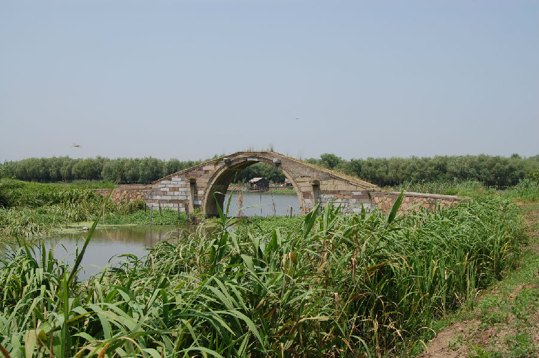

嘉兴市文物保护网 · 市级文物保护点 · 2020-11-09 · 原文

五环洞桥位于嘉兴市南湖区余新镇余北村22组与33组交界处，据桥体形制和周边村民介绍判断为民国时期建，南北跨五环洞港，西侧紧临海盐塘。单孔无栏石拱桥，桥全长21.75米，宽2.48米。南北喇叭口各宽3米，矢高4米，拱跨7.2米，桥带宽0.5米，桥身两侧各有4个天盘石。桥额“五环洞桥”，桥身刻有楹联，但水深无法寻得。桥身、天盘石刻有纹饰。顶盘石上有曲波纹。两侧部分桥带用水泥抹封。据当地人介绍本来是要在海盐塘上建一座五孔石拱桥，但限于当时的客观条件，后来只能在海盐塘支流五环洞港上建此单孔石拱桥，但仍命名为“五环洞桥”。该桥规模较大，紧临海盐塘，保存较好，具有较高的历史和科学价值。2009年公布为嘉兴市文物保护点。